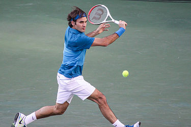

tennis is a racket sport that can be played individually against a single opponent (singles) or between two teams of two players each (doubles). Each player uses a tennis racket that is strung with cord to strike a hollow rubber ball covered with felt over or around a net and into the opponent's court. The object of the game is to maneuver the ball in such a way that the opponent is not able to play a valid return. The player who is unable to return the ball will not gain a point, while the opposite player will. Tennis is an Olympic sport and is played at all levels of society and at all ages. The sport can be played by anyone who can hold a racket, including wheelchair users. The modern game of tennis originated in Birmingham, England, in the late 19th century as lawn tennis. It had close connections both to various field (lawn) games such as croquet and bowls as well as to the older racket sport today called real tennis. During most of the 19th century, in fact, the term tennis referred to real tennis, not lawn tennis. The rules of modern tennis have changed little since the 1890s. Two exceptions are that from 1908 to 1961 the server had to keep one foot on the ground at all times, and the adoption of the tiebreak in the 1970s. A recent addition to professional tennis has been the adoption of electronic review technology coupled with a point-challenge system, which allows a player to contest the line call of a point, a system known as Hawk-Eye. Tennis is played by millions of recreational players and is also a popular worldwide spectator sport. The four Grand Slam tournaments (also referred to as the Majors) are especially popular: the Australian Open played on hard courts, the French Open played on red clay courts, Wimbledon played on grass courts, and the US Open also played on hard courts.
History and Origins of the modern game
Historians believe that the game's ancient origin lay in 12th century northern France, where a ball was struck with the palm of the hand.Louis X of France was a keen player of jeu de paume ("game of the palm"), which evolved into real tennis, and became notable as the first person to construct indoor tennis courts in the modern style. Louis was unhappy with playing tennis outdoors and accordingly had indoor, enclosed courts made in Paris "around the end of the 13th century". In due course this design spread across royal palaces all over Europe. In June 1316 at Vincennes, Val-de-Marne and following a particularly exhausting game, Louis drank a large quantity of cooled wine and subsequently died of either pneumonia or pleurisy, although there was also suspicion of poisoning. Because of the contemporary accounts of his death, Louis X is history's first tennis player known by name. Another of the early enthusiasts of the game was King Charles V of France, who had a court set up at the Louvre Palace.
It was not until the 16th century that rackets came into use and the game began to be called "tennis", from the French term tenez, which can be translated as "hold!", "receive!" or "take!", an interjection used as a call from the server to his opponent. It was popular in England and France, although the game was only played indoors where the ball could be hit off the wall. Henry VIII of England was a big fan of this game, which is now known as real tennis. During the 18th and early 19th centuries, as real tennis declined, new racket sports emerged in England.
The invention of the first lawn mower in 1830, in Britain, is believed to have been a catalyst, for the preparation of modern-style grass courts, sporting ovals, playing fields, pitches, greens, etc. This in turn led to the codification of modern rules for many sports, including lawn tennis, most football codes, lawn bowls and others.
etween 1859 and 1865 Harry Gem, a solicitor and his friend Augurio Perera developed a game that combined elements of racquets and the Basque ball game pelota, which they played on Perera's croquet lawn in Birmingham in England. In 1872, along with two local doctors, they founded the world's first tennis club on Avenue Road, Leamington Spa. This is where "lawn tennis" was used as a name of activity by a club for the first time. After Leamington, the second club to take up the game of lawn tennis appears to have been the Edgbaston Archery and Croquet Society, also in Birmingham.
In Tennis: A Cultural History, Heiner Gillmeister reveals that on December 8, 1874, British army officer Walter Clopton Wingfield wrote to Harry Gem, commenting that he (Wingfield) had been experimenting with his version of lawn tennis “for a year and a half”. In December 1873, Wingfield designed and patented a game which he called sphairistikè (Greek: σφαιριστική, meaning "ball-playing"), and was soon known simply as "sticky" – for the amusement of guests at a garden party on his friend's estate of Nantclwyd Hall, in Llanelidan, Wales. According to R. D. C. Evans, turfgrass agronomist, "Sports historians all agree that [Wingfield] deserves much of the credit for the development of modern tennis." According to Honor Godfrey, museum curator at Wimbledon, Wingfield "popularized this game enormously. He produced a boxed set which included a net, poles, rackets, balls for playing the game – and most importantly you had his rules. He was absolutely terrific at marketing and he sent his game all over the world. He had very good connections with the clergy, the law profession, and the aristocracy and he sent thousands of sets out in the first year or so, in 1874." The world's oldest annual tennis tournament took place at Leamington Lawn Tennis Club in Birmingham in 1874. This was three years before the All England Lawn Tennis and Croquet Club would hold its first championships at Wimbledon, in 1877. The first Championships culminated in a significant debate on how to standardise the rules.
Lawn tennis in the U.S., 1887
In the U.S. in 1874 Mary Ewing Outerbridge, a young socialite, returned from Bermuda with a sphairistikè set. She became fascinated by the game of tennis after watching British army officers play. She laid out a tennis court at the Staten Island Cricket Club at Camp Washington, Tompkinsville, Staten Island, New York. The first American National championship was played there in September 1880. An Englishman named O.E. Woodhouse won the singles title, and a silver cup worth $100, by defeating Canadian I. F. Hellmuth. There was also a doubles match which was won by a local pair. There were different rules at each club. The ball in Boston was larger than the one normally used in New York.
On 21 May 1881, the oldest nationwide tennis organization in the world was formed, the United States National Lawn Tennis Association (now the United States Tennis Association) in order to standardize the rules and organize competitions. The U.S. National Men's Singles Championship, now the US Open, was first held in 1881 at the Newport Casino, Newport, Rhode Island. The U.S. National Women's Singles Championships were first held in 1887 in Philadelphia.
Tennis doubles final at 1896 Olympic Games
Tennis also became popular in France, where the French Championships dates to 1891 although until 1925 it was open only to tennis players who were members of French clubs. Thus, Wimbledon, the US Open, the French Open, and the Australian Open (dating to 1905) became and have remained the most prestigious events in tennis. Together these four events are called the Majors or Slams (a term borrowed from bridge rather than baseball).
Ranking table of the 10 best tennis players in the world:
| Ranking | Full name | Country | Age |
|---|---|---|---|
| 1 | Novak Djokovic | Serbia | 32 |
| 2 | Rafael Nadal | Spain | 33 |
| 3 | Dominic Thiem | Denemark | 26 |
| 4 | Roger Federer | Switzerland | 38 |
| 5 | Daniil Medvedev | Russia | 24 |
| 6 | Stefanos Tsitsipas | Greece | 21 |
| 7 | Alexander Zverev | Germany | 22 |
| 8 | Matteo Berrettini | Italy | 23 |
| 9 | Gael Monfils | France | 33 |
| 10 | David Goffin | Belgium | 29 |